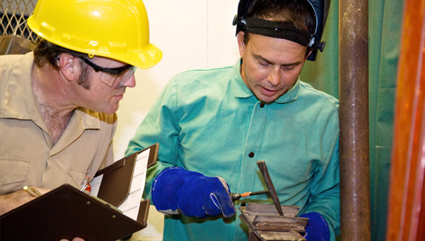

Consulting
Develop and maintain a quality management system that works.

Consulting · Auditing · Inspection · Training
Practical expertise for your people, processes and equipment. Move forward with a clearer understanding of quality and risk.
Knowledge that teams can use.
Quality built into your processes.
Insight through audit and inspection.
A practical path to improvement.
Technical expertise. Practical perspective.
Texas International Engineering Consultants supports organizations with quality management systems, technical inspections, auditing and training. From understanding requirements to improving everyday practice, TIEC helps turn complex challenges into focused action.
About TIEC → Assess.
Assess.Our services
Develop and maintain a quality management system that works.
Identify gaps, understand findings and support corrective action.

Technical oversight for equipment, fabrication and field operations.
Build capability in quality, risk and auditing with focused learning.
Let’s talk about the quality challenges facing your organization.
Knowledge & development
Company update · May 2026
TIEC and PPI Quality & Engineering, a Kiwa company, announced a strategic partnership in May 2026.
Read the official announcement →Published by Kiwa on May 20, 2026.Let’s connect
Tell us which service interests you, or contact TIEC using the official details below.
Unofficial website concept · Review only
This form is a demo. It prepares a draft in your browser and does not send an inquiry to TIEC.